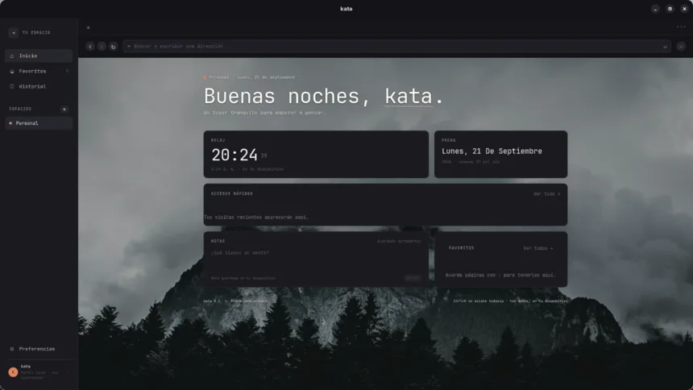
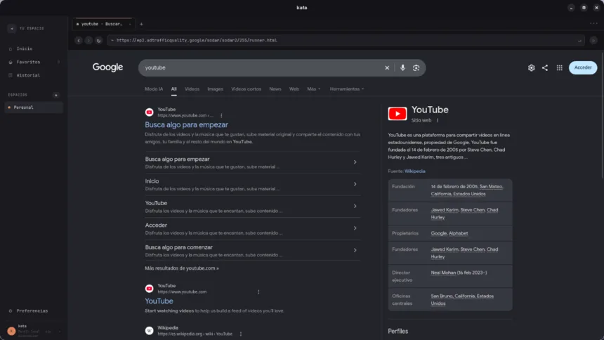
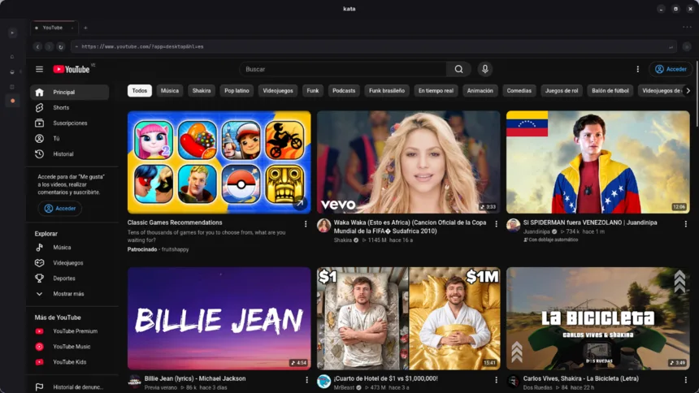

PORTFOLIO DIGITAL
Un escritorio para
ideas en movimiento.
Explora mi trabajo como si hubieras encendido mi estación de desarrollo.
Construido con intención.
Una selección de experimentos, interfaces y sistemas que convierten problemas complejos en experiencias claras.
Hablemos de lo próximo.
Estoy disponible para colaboraciones, productos digitales y conversaciones con buen criterio.
enmanuelOS terminal [versión 1.0]
Escribe help para ver los comandos
disponibles.
kata — un navegador que se queda contigo.
Local, privado y silencioso. Sin cuentas, sin telemetría ni sincronización forzada: el estado de la aplicación vive en tu equipo. Construido con Tauri, React y Rust para Linux.



Detrás del sistema.
Diseño y desarrollo de productos digitales desde Venezuela: interfaces premium, dashboards técnicos y experiencias web con foco en claridad y conversión.